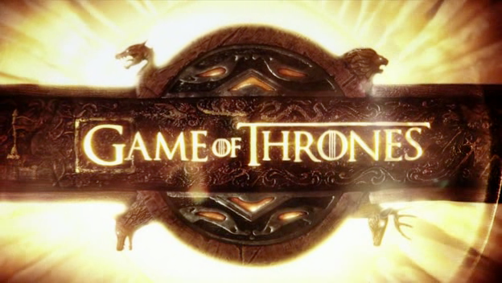

Game of Thrones
Da obra As Crônicas de Gelo e Fogo de G.R.R. Martin
Game of Thrones é uma série de televisão americana de fantasia dramática criada por David Benioff e D. B. Weiss para a HBO. É baseada na série de livros As Crônicas de Gelo e Fogo, do autor George R. R. Martin.
A série estreou em e foi concluída em , com um total de 8 temporadas e 73 episódios.

Sinopse
Em Westeros, uma terra onde os verões podem durar décadas e os invernos uma vida inteira, várias famílias nobres lutam pelo controle do Trono de Ferro. Enquanto isso, uma antiga ameaça desperta além da Muralha, no Norte, ameaçando destruir tudo.
Personagens Principais
- Eddard Stark: O honrado chefe da Casa Stark.
- Daenerys Targaryen: A última herdeira da dinastia Targaryen.
- Jon Snow: O bastardo de Eddard Stark que se junta à Patrulha da Noite.
- Tyrion Lannister: O inteligente e astuto membro da Casa Lannister.
Curiosidades
Quantos livros a série adaptou?
A série foi baseada nos primeiros cinco livros da saga, mas a partir da 6ª temporada, os roteiristas tiveram que criar conteúdo original, pois os livros ainda não haviam sido lançados.
Qual foi o custo de produção?
Estima-se que cada episódio da 8ª temporada custou cerca de 15 milhões de dólares, tornando-a uma das séries mais caras da história da TV.